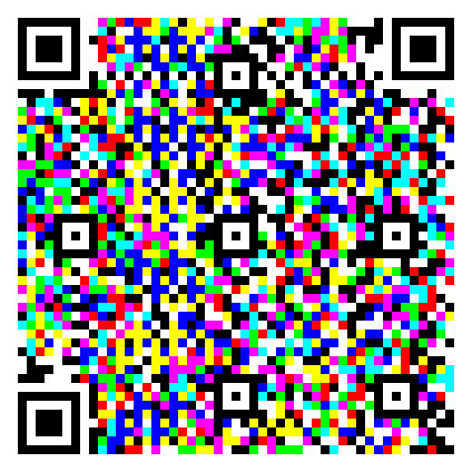

Універсальна модель SCI (Spectral Channel Integrity): детермінована нормалізація спектрального відгуку
Фундаментальний алгоритм спектральної гомогенізації середовищ для комп'ютерного зору, стеганографії та високоточного відтворення кольору.

1. Фізична природа crosstalk
Субтрактивна модель кольороутворення (CMYK) не є фізично симетричною до адитивної моделі (RGB). В адитивних системах кожен канал може існувати незалежно, тоді як реальні пігменти мають широкі спектри поглинання та відбиття, що неминуче призводить до міжканального впливу.
Основною причиною crosstalk є спектральна неідеальність пігментів. Жоден друкарський барвник не здатний повністю поглинати цільову ділянку спектра і одночасно повністю відбивати інші ділянки. Крім того, різні пігменти мають неоднакові динамічні діапазони та різний ступінь спектрального перекриття.
Наслідок: У результаті інформація, записана в одному каналі, частково проявляється в інших каналах. Це порушує їхню незалежність і унеможливлює точне відтворення пропорцій сигналу під час перенесення багатоканальних даних із адитивного середовища на субтрактивний носій.

Fig 2: Порівняльний аналіз каналів: ідеальне розділення (А), міжканальне перекриття (В), лінеаризований відгук SCI (С).
У стандартних CMYK-системах жовтий пігмент зазвичай найближчий до ідеальної спектральної характеристики, тоді як ціан і маджента демонструють більш вузький робочий діапазон і вищий рівень міжканальної інтерференції.
На рисунку 2 показано цей ефект. У системі RGB (A) канали є незалежними та можуть бути повністю розділені. Після відтворення того самого зображення на субтрактивному носії стандартними методами (B) виникає міжканальне перекриття, через яке під час спектральної сепарації кожен канал містить інтерференційні компоненти інших каналів.
Після застосування нормалізації SCI (C) амплітудний дисбаланс і базові рівні вирівнюються, що суттєво зменшує crosstalk і відновлює операційну незалежність каналів.
2. Суть моделі SCI: спектральне вирівнювання через лімітування
SCI приводить спектральні характеристики пігментів до спільних опорних меж, формуючи узгоджене середовище, у якому стає можливим детерміноване розділення інформаційних каналів.
Принцип спектрального лімітування:
У реальних субтрактивних системах різні пігменти мають неоднакові амплітуди відбиття та різний динамічний діапазон. SCI використовує найслабший компонент системи як спектральний еталон і масштабує характеристики інших каналів відносно цього обмеження. У результаті всі канали отримують єдині верхній ($U_{ref}$) і нижній ($L_{ref}$) опорні рівні.
Результат нормалізації: Після масштабування система втрачає частину візуальної яскравості та контрастності, проте набуває значно важливішої властивості — спектральної узгодженості. Амплітудний дисбаланс між пігментами усувається, а відносні співвідношення між каналами стають стабільними та відтворюваними.
На відміну від традиційної поліграфії, де пріоритетом є максимальна візуальна насиченість кольорів, модель SCI віддає пріоритет спектральній точності та збереженню інформаційної структури сигналу.

Fig 3: Процес спектрального масштабування (Spectral Scaling) та приведення кривих до спільних меж U_ref та L_ref.
Спектральне масштабування: На рисунку 3 показано процес спектрального масштабування. Ліворуч наведено вихідні спектральні характеристики пігментів із різними амплітудами та базовими рівнями. Праворуч — ті самі криві після застосування SCI, де всі канали приведені до спільних меж $U_{ref}$ та $L_{ref}$.
Математична формалізація: Нормалізація виконується відповідно до виразу:
$$I_{norm}^c(\lambda) = \frac{I_{scaled}^c(\lambda) - L_{ref}}{U_{ref} - L_{ref}}$$
де $U_{ref}$ та $L_{ref}$ визначають єдині опорні межі системи. Таке перетворення дозволяє зафіксувати спектральні константи середовища та забезпечити відтворюваність відносних характеристик каналів незалежно від варіацій їхніх початкових амплітуд.
3. Зворотність процесу: цифрова регенерація
Оскільки модель SCI зберігає строгі пропорції спектральних каналів на фізичному носії без нелінійних викривлень, процес взаємодії між цифрою та аналогом стає математично оборотним. Фізичний відбиток може бути повторно оцифрований за допомогою систем комп'ютерного зору, після чого в цифровому середовищі зображення повертається до своїх вихідних RGB-характеристик без втрати інформаційної структури сигналу.
Ключовий наслідок: Математична оборотність відкриває можливість для побудови надійних систем комп'ютерного зору та прихованого кодування, які безпомилково працюють на реальних фізичних об'єктах, а не тільки всередині екранних зображень.
Крок 1. Фіксація стану
Модель SCI забезпечує збереження пропорцій спектральних каналів на фізичному носії (папір, полотно, пластик). Це означає, що співвідношення енергії між червоним, зеленим та синім каналами залишається незмінним — на відміну від класичного друку, де crosstalk спотворює ці пропорції непередбачувано.
Крок 2. Оцифрування без втрат
Фізичний відбиток може бути повторно оцифрований — сканований побутовим сканером або сфотографований камерою (системою комп'ютерного зору). Оскільки спектральний шум відсутній, отримане цифрове зображення містить той самий набір пропорцій каналів, що й оригінальний SCI-файл до друку.
Крок 3. Лінійне нормування
У цифровому середовищі застосовується просте лінійне нормування контрасту (розтягнення динамічного діапазону від мінімального до максимального значення). Жодної нелінійної корекції, жодних ICC-профілів, жодних «підборів на око».
Крок 4. Повна регенерація
Результатом є зображення, ідентичне вихідним RGB-характеристикам, які були закладені в цифровий файл до друку. Кольорова інформація відновлюється без найменшої втрати — з точністю, яку дозволяє роздільна здатність сенсора.
4. Прикладне значення та діючі компоненти екосистеми
Використання кольору як носія інформації — відома ідея. На екрані монітора кольорові канали ізольовані, тому багатошарові RGB-коди зчитуються без помилок. Проте при перенесення такого коду на фізичний носій (папір, полотно) класичними методами друку виникає спектральна інтерференція (crosstalk), яка змішує канали та робить зчитування неможливим. Існуючі алгоритмічні рішення намагаються компенсувати цей ефект постфактум, але не усувають його причину.
Модель SCI вирішує проблему на рівні фізичного синтезу. Код, надрукований або нанесений фарбами, збалансованими за принципом спектрального лімітування, зберігає структуру каналів. Це забезпечує стабільне зчитування навіть із фактурних поверхонь.

Spectrum QR
Генератор та сканер багатошарових кольорових QR-кодів. Інформація кодується одночасно в червоному, зеленому та синьому каналах.

QRnament v3.5
Генератор та сканер орнаментальних QR-кодів, інтегрованих у складні візерунки.
Важливе зауваження: Наразі обидва генератори працюють лише в цифровому середовищі. Вони створюють коди, що ідеально зчитуються з екрану монітора, але не виконують SCI-балансування кольорів. Розробка програмного модуля, який автоматично застосовуватиме балансування до згенерованих кодів, триває.


В рамках експерименту автор наніс акриловими фарбами на полотно кольоровий QR-код, свідомо підібравши кольори відповідно до вимог моделі SCI (балансування відносно спектрального лімітера).
Результат: код успішно зчитується з фізичного носія стандартною камерою. Це доводить, що усунення crosstalk на рівні фізичного синтезу діє навіть без програмної корекції на приймаючій стороні.
5. Проєктна архітектура ПЗ: автоматизація калібрування та віртуалізація друку
На даному етапі ведеться розробка архітектури ПЗ, що дозволить автоматизувати застосування моделі SCI для масового користувача без ручного прорахунку спектральних кривих.
Перспективний функціонал інструменту (SaaS / Web App):
- Калібрування принтера: Друк та аналіз тест-патчу «Спектральні конуси».
- Калібрування монітора: Оптимізація відображення під конкретний аналоговий відбиток.
- Контроль якості поліграфії: Об'єктивний критерій сепарації каналів без спектрофотометрів.
- Віртуалізація друку для дизайнерів: Симуляція кінцевих фізичних викривлень на екрані.
Поточний статус та запрошення до співпраці: Теоретична база повністю сформована та підтверджена натурними експериментами на полотнах. Проєкт відкритий для співпраці з розробниками ПЗ та фахівцями у сфері комп'ютерного зору (Computer Vision) для спільної реалізації ядра алгоритму та створення зазначених програмних модулів.
1. Калібрування принтера
Друк індивідуального тест-патчу «Спектральні конуси» на цільовому обладнанні користувача. Аналіз фотографії відбитка через камеру смартфона для миттєвої побудови матриці спотворень. Автоматичний ре-маппінг та лімітування ентропії вихідного зображення перед печаткою.
2. Калібрування монітора
Фотографування спектральних конусів, надрукованих за SCI-методом, і налаштування монітора так, щоб канали на знімку чисто розділялися. Це дозволяє налаштувати монітор на достовірну передачу кольору відповідно до фізичних характеристик конкретного принтера та паперу.
3. Контроль якості поліграфічної продукції
Розміщення спектральних конусів поруч із репродукцією картини. Якщо при друку вдається досягти чистої сепарації конусів під RGB-освітленням або через кольорові фільтри, то всі інші кольори на картині також будуть передані достовірно. Це дає об'єктивний критерій якості без дорогих спектрофотометрів.
4. Віртуалізація друку для дизайнерів
Розробка програмного режиму для монітора, який симулює кінцевий вигляд зображення після друку на конкретному обладнанні з урахуванням усіх спотворень. Дизайнер бачить не абстрактні яскраві кольори, а те, що реально вийде на папері. Це дозволяє вносити правки до друку, а не після нього.
Контакти для зв'язку
BibTeX / Zenodo Citation
@techreport{model_sci_2026,
author = {Kashkarov, Mykhailo},
title = {SCI Universal Model: Spectral Channel Integrity},
year = {2026},
doi = {10.5281/zenodo.19633526}
}